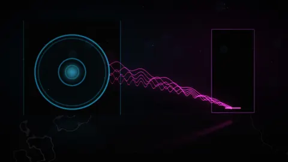
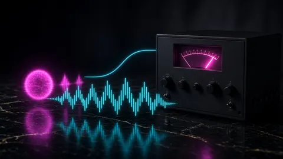
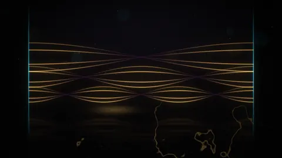
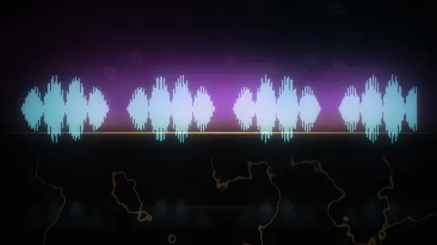
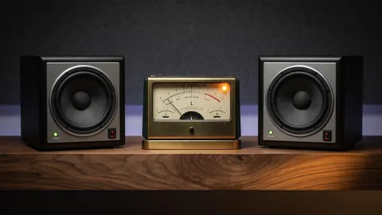
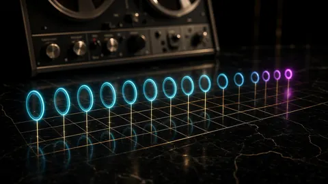

Lacquer · Topic · 15 essays
Low end, 808s & mix dynamics
Most low-end problems are arguments over a small piece of the spectrum. Decide who owns it, then measure the translation instead of guessing.
Most low-end problems are arguments over a small piece of the spectrum. A kick and an 808 both want roughly 40–80 Hz. A bus compressor reacting to that energy ducks the hats and vocal air on every note. Rumble under 20–30 Hz that you can barely hear still counts toward the peak your limiter has to catch. And phone speakers play almost nothing below 200–300 Hz, so a clean sub can vanish on the speaker most people actually use. Even your own chair can lie: room modes make one bass note boom or vanish when you roll back a foot.
These essays decide who owns each frequency, how to keep glue without pumping, and how to check translation with a measurement instead of a guess. The second half moves up the mix: parallel compression that sounds thin because the parallel bus arrives late, vocal level measured as a loudness gap against the beat, sibilance that a master makes louder, reverb returns that fill the low-mids with fog, and stereo width that collapses when the mix folds to mono.

Low end · 15 October 2026 · 8 minWhy your 808 disappears on phone speakers
Phone speakers barely play below 200–300 Hz, so a clean 808 vanishes. Add a parallel harmonic layer, then check it through a phone filter.
- Mix · 5 October 2026 · 8 min
Your kick and 808 are arguing in the same chair
Kick and 808 fighting for 40–80 Hz? Decide who owns each hit with arrangement, carving or sidechain, then measure loudness so repair isn't hiding mud.

Dynamics · 7 October 2026 · 8 minYour bus compressor is pumping on the 808. High-pass the sidechain
Hats and vocal air ducking on every 808 note means the low end is driving your bus compressor. A 60–150 Hz sidechain high-pass keeps the glue and stops the pump.
- Low end · 7 October 2026 · 8 min
Rumble you can’t hear is eating your limiter
Subsonic rumble and DC offset barely move LUFS but still count toward peaks. Check under 20–30 Hz and filter gently before the limiter to win headroom back.

Monitoring · 19 October 2026 · 8 minYour low end changes when you move your chair. That’s the room, not the mix
Bass booms in one spot and vanishes a foot away? That’s room modes. Work out your room’s modes, find a better seat and check low end without treatment.
- Mix craft · 16 October 2026 · 8 min
Parallel compression sounds thin? Check the latency first
Parallel compression making drums or vocals thinner? The parallel bus is probably arriving late. Find the offset, fix the timing, then dial it in.
- Mix · 6 October 2026 · 8 min
How loud should the vocal sit? Measure it against the beat
There’s no single right vocal level, but the vocal-to-beat loudness gap in LU is measurable. Match it to a reference, then fix only the buried bars.
- Vocals · 6 October 2026 · 7 min
Harsh S’s get louder after mastering. De-ess before the limiter
Vocals harsh after mastering? The master lifts level and top end, so borderline sibilance pops and eats true-peak headroom. Find the worst S’s and fix them in the mix.

Mix craft · 19 October 2026 · 8 minReverb making the mix muddy? Filter the return, not the vocal
Reverb muddying the mix? Most of a return’s energy sits in low-mids you don’t hear as space. High-pass the return, add pre-delay, duck it and time the decay.
- Stereo · 6 October 2026 · 8 min
Wide mixes fail in mono. Check mid/side before you bounce
Stereo width that sounds huge on headphones can cancel on a phone. Measure mid/side balance, L/R correlation, and mono fold-down before you bounce.

Stereo · 21 August 2026 · 7 minPhase correlation is a mono audition
Phase near 0 or negative means the mix thins or cancels in mono. CoProducer fails values under about 0.2. Auto-repair will not flip polarity for you.

Mix · 21 October 2026 · 7 minYour delay sounds off the beat? Set it from the tempo, not by ear
How to calculate delay time from BPM: 60,000 ÷ BPM is a quarter note in ms. Straight, dotted and triplet times, grid-locked pre-delay, and why 'close enough' drifts.
- Vocals · 22 October 2026 · 7 min
Loud breaths in your vocal? Turn them down before the compressor, don’t cut them
How to handle breaths in a vocal: lower them with clip gain before compression instead of deleting them. A compressor with make-up gain can shrink the gap between singing and breath from 12 dB to 3 dB.
- Mix · 22 October 2026 · 7 min
Panned parts get quieter in mono? That’s your pan law, not your ears
What pan law is and why it matters: a centered sound is turned down on both sides so panning doesn’t change its loudness. Fold to mono and the center jumps up to 3 dB. Table and script inside.
- Low end · 23 October 2026 · 7 min
808 sounds off-key? Find its real note, then tune it to the song
How to tune an 808 to the key of your song: measure the note of the sustained tail, not the punch or the filename, then set coarse and fine tune so it lands on the root. Note table and script inside.
More topics: Loudness & LUFS True peak, limiting & delivery 432 Hz, pitch & tempo Stem separation, sampling & privacy All essays